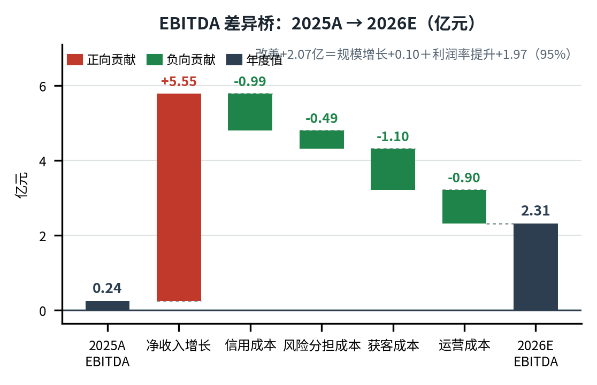
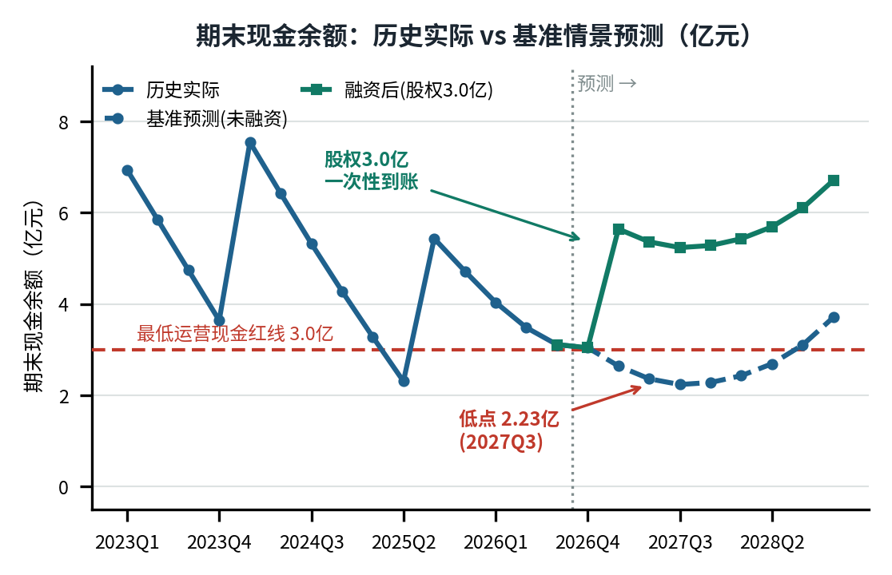

| 指标 | 2025A | 2026E | 变化 |
|---|---|---|---|
| 放款规模（亿） | 375.2 | 495.0 | +31.9% |
| 变现率 | 3.67% | 3.91% | +23bp |
| 净收入（亿） | 13.79 | 19.34 | +40.3% |
| ├ 规模贡献 | +4.40（79%） | ||
| └ 变现率贡献 | +1.15（21%） | ||
| 规模对 EBITDA 贡献* | +0.10 | ||
| 指标 | 悲观 | 基准 | 乐观 |
|---|---|---|---|
| 放款增速 | +8.8% | +20.8% | +32.8% |
| 变现率 | 3.93% | 4.13% | 4.25% |
| 净收入（亿） | 21.19 | 24.72 | 27.97 |
| EBITDA（亿） | 1.22 | 4.52 | 6.87 |
| 利润率 | 5.8% | 18.3% | 24.6% |
| 现金低点(融资后) | 0.20 | 5.23 | 6.51 |